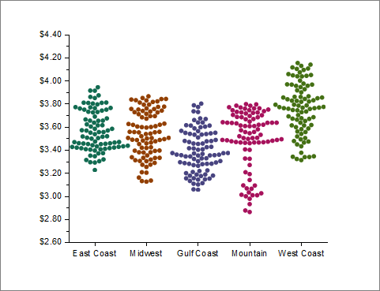
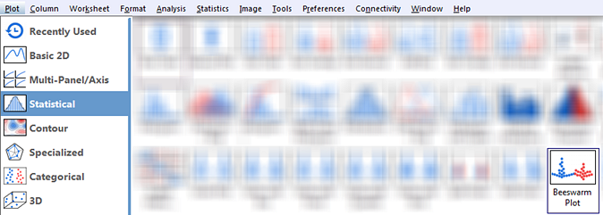

Beeswarm-Diagramm
Beeswarm-Plot
- 
Datenanforderungen
Wählen Sie ein oder mehrere Arbeitsblattspalten aus.
Diagramm erstellen
- Wählen Sie die gewünschten Daten aus.
- Wählen Sie im Menü .
- 
Vorlage
Beeswarm.OTPU (installiert im Origin-Programmordner)
Hinweise
- Jede Y-Datenspalte wird als ein separater Schwarm der Datenpunkte dargestellt. Spaltenlangnamen, wenn es sie gibt, liefern die Beschriftungen der Hilfsstriche der X-Achse, ansonsten werden Kurznamen verwendet.
- Das Beeswarm-Diagramm ist eine Variante des Boxdiagramms mit dem Box typ = Daten und dem Datentyp = Punkte mit Punkte anordnen = Schwarm.